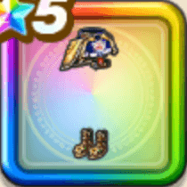

あぶない水着24下
攻略班 9.5点 / ふきとばし耐性+5%魅了耐性+5%ふきとばし耐性+5%魅了耐性+5%じゅもんHP回復効果+5%【晴れ】スキルHP回復効果+2%【大神官】スキルHP回復効果+1%
くわしい特徴
【レベル別習得スキル】 Lv1ふきとばし耐性+5% Lv8魅了耐性+5% Lv10じゅもんHP回復効果+5% Lv12【晴れ】スキルHP回復効果+2% Lv15【大神官】スキルHP回復効果+1% Lv18すばやさ+5 Lv20ふきとばし耐性+5% Lv23すばやさ+10 Lv25魅了耐性+5% 【限界突破スキル】 1凸かいふく魔力+10 2凸さいだいMP+10 3凸さいだいHP+10 4凸守備力+10